0x01 zookeeper集群搭建
安装 Java
从官网下载最新版 Java 就可以，Spark官方说明 Java 只要是6以上的版本都可以，我下的是 jdk-8-linux-x64.gz; 在~/workspace目录下直接解压
1 | tar -zxvf jdk-7u75-linux-x64.gz |
$ source /etc/profile #生效环境变量
$ java -version #如果打印出如下版本信息，则说明安装成功
1 | java version "1.8.0_75" |
安装zookeeper
1 | sudo wget https://archive.apache.org/dist/kafka/0.10.1.0/kafka_2.11-0.10.1.0.tgz |
0x02 kafka集群搭建
1 | sudo mkdir -p /usr/local/kafka/log/kafka |
更新kafka的offset异常问题:
bin/kafka-consumer-groups.sh –bootstrap-server localhost:9092 –group test-group –reset-offsets –all-topics –to-current –execute
bin/kafka-consumer-groups.sh –bootstrap-server localhost:9092 –group test-group –reset-offsets –all-topics –to-offset 500000 –execute –更新到指定位置
bin/kafka-consumer-groups.sh –bootstrap-server localhost:9092 –group test-group –reset-offsets –all-topics –to-earliest –execute –更新到最初位置
0x03 kafka管理界面
1 | sudo unzip kafka-manager-1.3.3.7.zip -d /usr/local |
0x04 flume配置
下载flume的包，查看lib文件夹下是否存在kafka依赖库文件
cd /chj/soft/flume-1.8.0/
./bin/flume-ng agent –conf conf –conf-file conf/flume-conf.properties –name a1 -Dflume.root.logger=INFO,console
1 | a1.sources = r1 |
0x05 测试
1 | 创建： |
0x06 设置开机启动
1 | yum install initscripts -y |
其它同样操作。
0x07 Spark Install on Yarn
机器互相
1 | 配置hosts |
安装scala
下载spark对应的Scala，注意不要下错版本，我这里下了 2.11.8，官方下载地址; 使用版本: Spark 2.1.3 Sacala 2.11.8 kafka 0.10.1.0 JDK 1.8
1 | sudo wget https://downloads.lightbend.com/scala/2.11.8/scala-2.11.8.tgz |
安装配置Hodoop Yarn
下载地址。 需要配置有以下7个文件：hadoop-env.sh，yarn-env.sh，slaves，core-site.xml，hdfs-site.xml，maprd-site.xml，yarn-site.xml
1 | sudo wget https://archive.apache.org/dist/hadoop/core/current/hadoop-3.1.1.tar.gz |
安装spark
下载地址。 可以兼容hadoop2.7以后
1 | sudo wget http://mirror.bit.edu.cn/apache/spark/spark-2.4.0/spark-2.4.0-bin-hadoop2.7.tgz |
单机运行
1 | sudo wget http://mirror.bit.edu.cn/apache/spark/spark-2.4.0/spark-2.4.0-bin-hadoop2.7.tgz |
在sbin的目录下的spark-config.sh 文件下添加JAVA_HOME的索引; 启动
1 | $ sudo /usr/local/spark/sbin/start-master.sh |
添加任务
1 | sudo /usr/local/spark/bin/spark-submit --master spark://spark-master:7077 --class com.chj.sec.skyeye /opt/down/Skyeye2.jar |
0x08 spark开发
新建项目
下载Intelij,直接安装； 新建scala项目并配置spark依赖和对应的kafka版本进行开发。
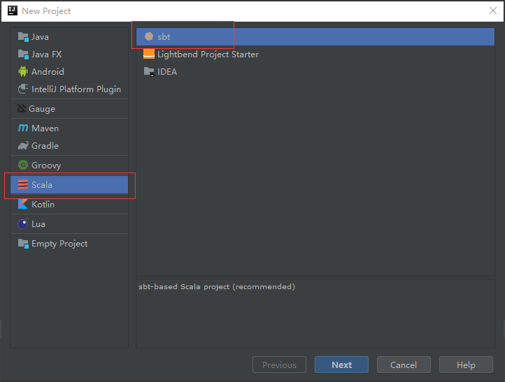
选择 Scala -> SBT, 然点击 Next。 (SBT 是一个互动式的编译工具，详细了解看到 官网 查看。)
然后给自己的项目取个名字，接着再根据自己Spark版本，选择合适的Java、Scala版本，最后点击 Finish 即可。
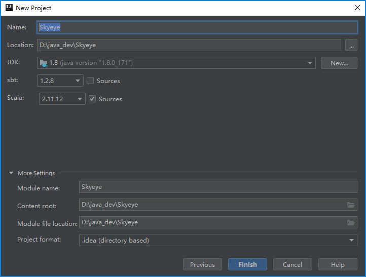
引入依赖包
引入Spark的依赖, 进入项目后，点击左上角 File -> Project Structure。 点击 Libraries ，然后点 绿色的加号。这时出现了三个选项： Java， Maven， Scala SDk。
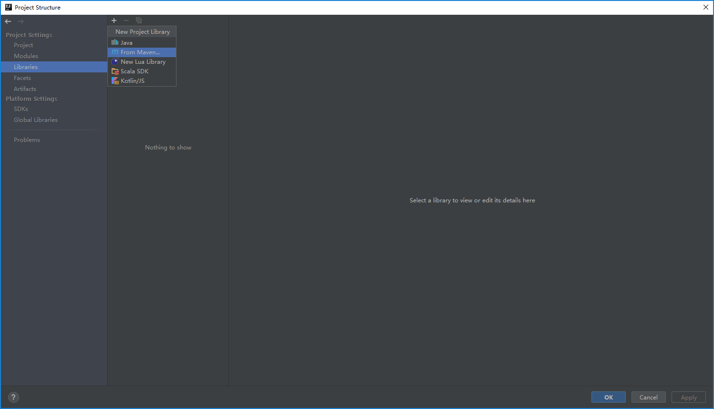
也可以从Modules -> Dependencies 导入本地依赖包。
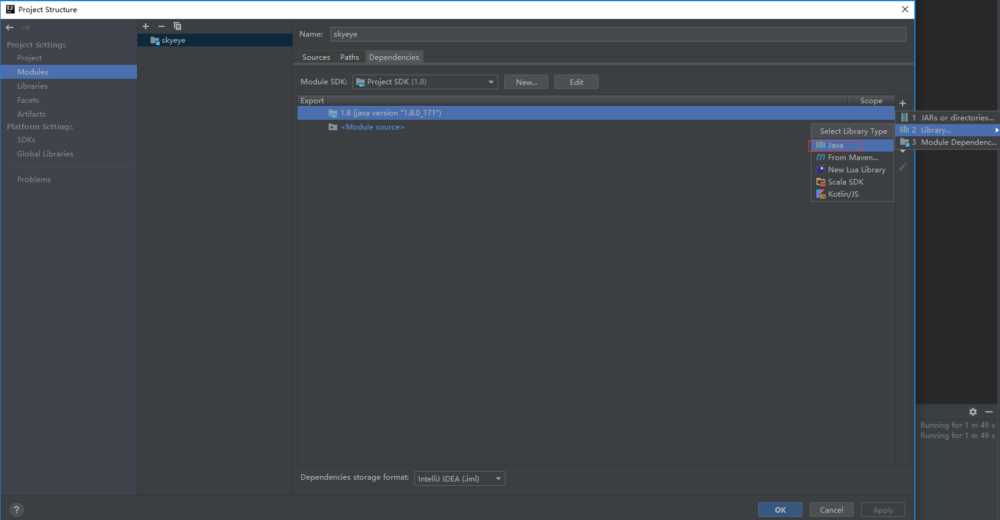
如果你选择maven方式添加spark，可以参考这里，来获取 对于的maven链接。形如：org.apache.spark:spark-core_2.11:2.4.0; 代表：scala-2.11.* spark-2.4.0; 这个需要和线上的保持一致。
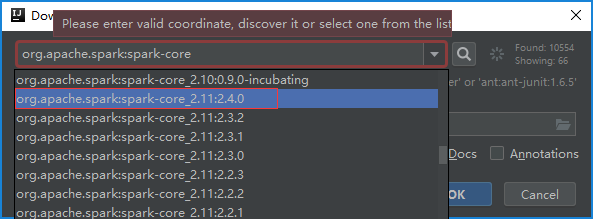
接着就可以编写你的项目了！
编写项目
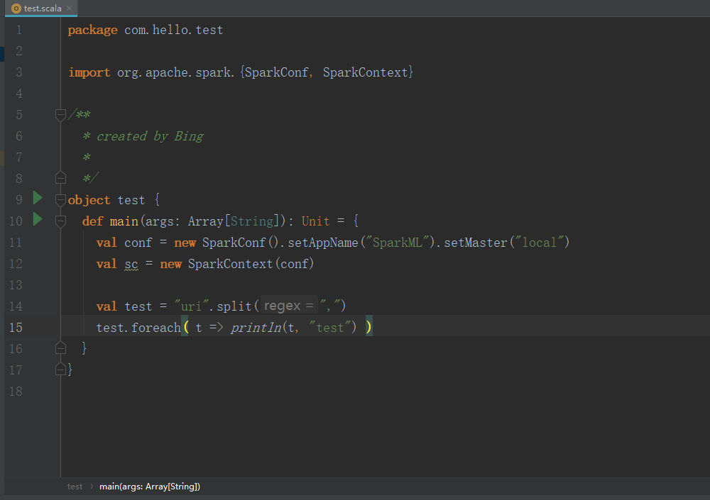
导出jar包
引入Spark的依赖, 进入项目后，点击左上角 File -> Project Structure。 点击 Artifacts，如下:
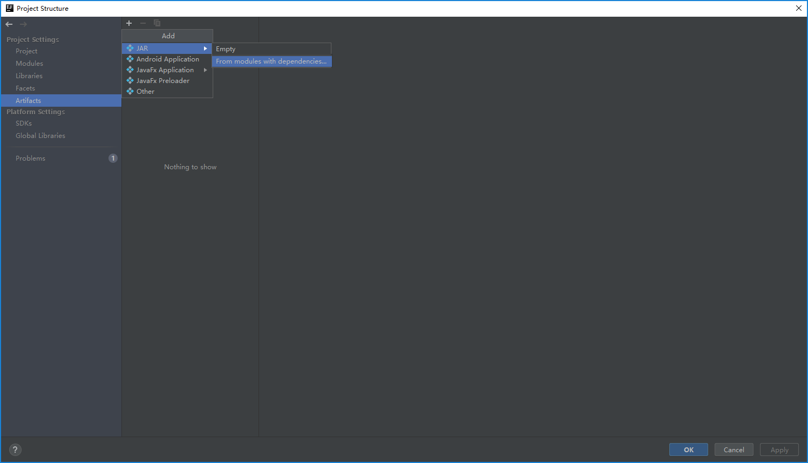
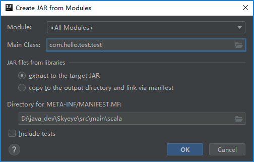
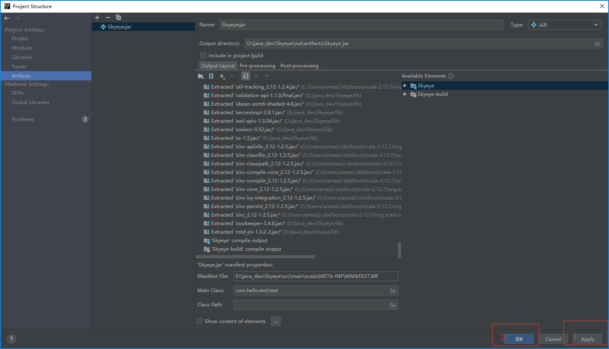
点击build,选择build Artifacts进行构建
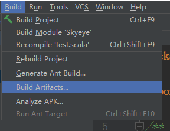
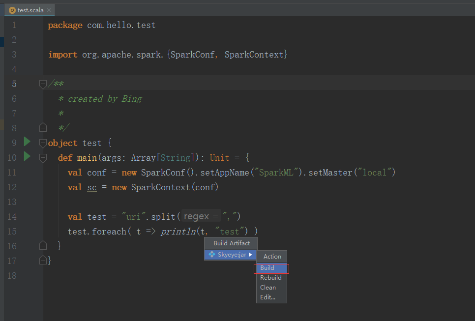
其它
kafka连接方式
Direct方式连接:将会创建跟kafka分区一样多的RDD partiions，并行的读取kafka topic的partition数据。kafka和RDD partition将会有一对一的对应关系。
Receiver方式连接:Receiver-based Approach需要启用WAL才能保证消费不丢失数据，效率比较低。
offset设置:
Spark Streaming checkpoints, 将offsets存储在HBase中, 将offsets存储到 ZooKeeper中, Kafka 本身, 其他方式。
spark官方推荐使用ml, 因为ml功能更全面更灵活，未来会主要支持ml，mllib很有可能会被废弃(据说可能是在spark3.0中deprecated）
ml主要操作的是DataFrame,DataFrame是Dataset的子集，也就是Dataset[Row], 而DataSet是对RDD的封装，对SQL之类的操作做了很多优化
ml中的操作可以使用pipeline, 跟sklearn一样，可以把很多操作(算法/特征提取/特征转换)以管道的形式串起来，然后让数据在这个管道中流动。大家可以脑补一下Linux管道在做任务组合时有多么方便。
1.把所有的攻击语句里面的特殊字符和数字，函数转化为指定的字母， 作为观察的几个维度；
2.把整个攻击语句泛化后的每个单词转化为数字，生成一个数组维度；
3.查看这组数组是否在语句中出现过